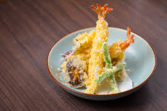

日本料理的歷史
日本列島在彌生時代（公元前3世紀至公元3世紀）開始出現以水稻為主的農業，
進入農耕時代。這個時期的日本人由於學會了種稻、飼養牲畜，所以開始將主副食分開，
此外也學會了釀酒和在食物中添加佐料，奠定日本菜的基礎。奈良時代，
日本社會的上層貴族開始與中國有文化交流，中國的伙食文化和宴席制度被引進日本。
由於當時佛教已傳入日本，日本開始禁吃肉食，做菜基本不用油，生活非常簡樸。直到室町時代，
佛教襌宗和茶葉從中國傳入日本，誕生了懷石料理。在這一時期，歐洲油炸類的菜餚也開始傳入日本，
成為了之後的天婦羅。其後佛教的影響加大，佛家的「自然、平和」元素融入了日本文化，
也滲透到日本人的日常飲食中。

首頁
第3頁
第4頁
第5頁